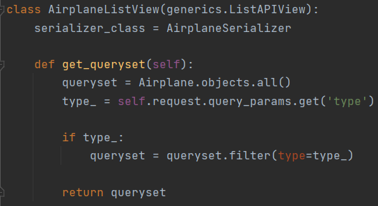
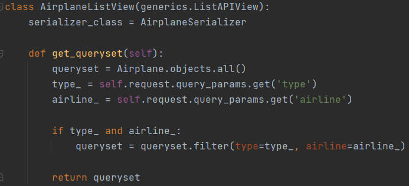
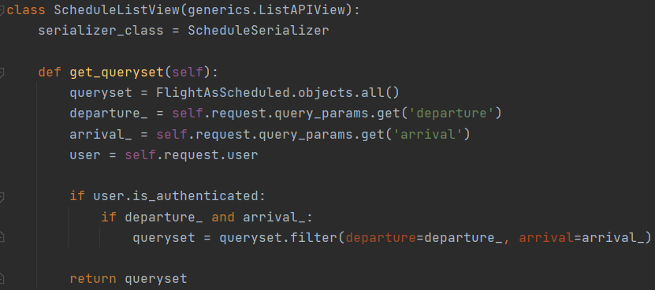

2.1.1 Ручные фильтры
Задание:
Реализовать вручную следующие фильтры:
- принимает параметр из url-адреса и выводит отфильтрованные данные. (GET, ListAPIView)
- принимает 2 параметра из url-адреса и выводит отфильтрованные данные. (GET, ListAPIView)
- принимает 2 параметра из url-адреса и выводит отфильтрованные данные, если пользователь авторизован и неотфильтрованные, если не авторизован. (GET, ListAPIView)
Фильтр самолётов по типу: 
Фильтр самолётов по типу и авиалинии: 
Фильтр рейсов по городам вылета и прилёта для авторизованных пользователей: 